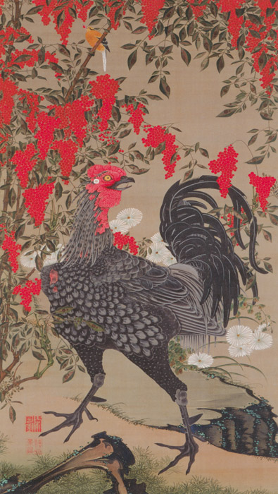

作品名 「南天雄鶏図」
花言葉
「私の愛は増すばかり」「機知に富む」
「福をなす」「良い家庭」
南天
「福をなす」
和名ナンテンの由来は、冬に赤い果実が目立つことから、中国では灯火を連想して南天燭といい、また葉や幹の姿が竹に似ることから南天竹（南天竺）と名付けられ、これを音読みして和名がつけられたとされる。「難を転ずる」の語呂から、古くから縁起物として安産祈願や正月の飾り花にも使われる。
南天雄鶏図
伊藤若冲
『動植綵絵』（どうしょく さいえ）動植物を描いた彩色画のひとつ。ナンテンとシャモのトサカの赤、シャモの黒、キクの白、小禽の黄色と色の対比が美しい作品。それぞれが絶妙なバランスをもって配置されている。
| 作品名 | 南天雄鶏図 |
| 作者 | 伊藤若冲 |
| 制作年 | 1765年 |
| 種類 | 絹本着色 一幅 |
| 寸法 | 142.6cm × 79.9cm |
| 所蔵 | 宮内庁三の丸尚蔵館 |